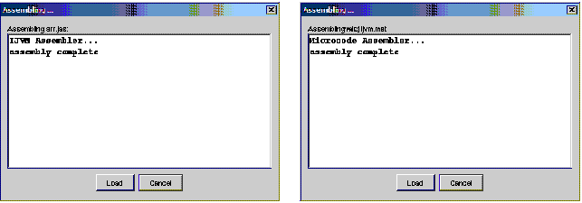

The JAS and MAL Assembler Views show the assembly of IJVM and microcode source programs, respectively. They appear whenever the user loads a new JAS or MAL file from, respectively, File | Assemble/Load JAS file ... or File | Assemble/Load MAL file ..., or when reassembling the current JAS or MAL files using respectively, Assemble/Load | Current JAS Assemble/Load or Assemble/Load | Current MAL Assemble/Load.
If assembly produces no errors, the resulting object file can be immediately loaded.
